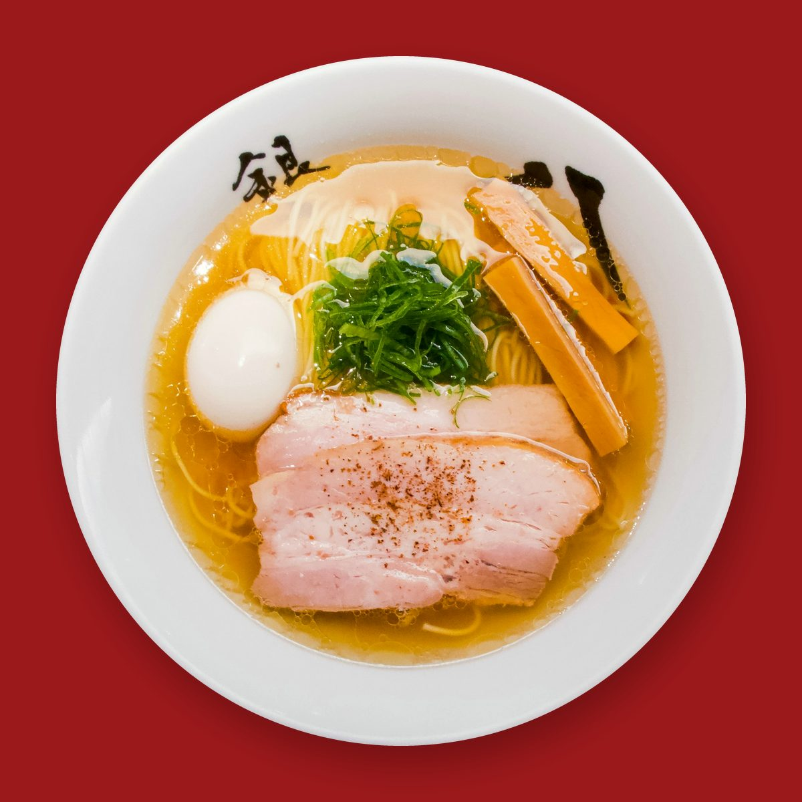
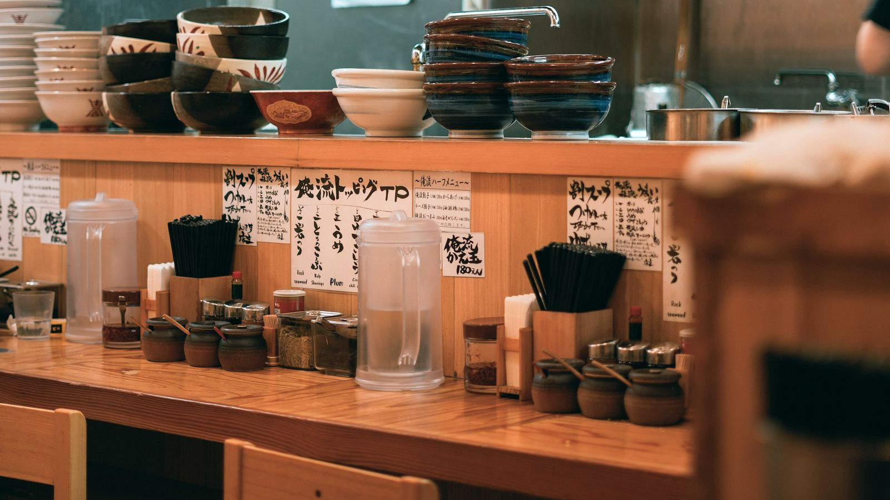
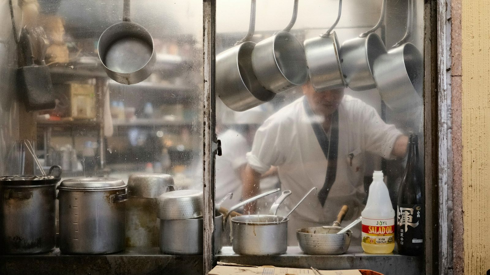
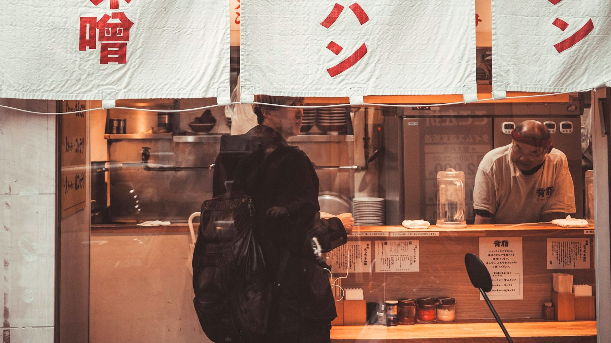

합정역 7번 출구 · 11:30 오픈
닭 뼈를열 시간,진한 한 그릇.
뽀얀 토리 파이탄과 맑은 쇼유. 면은 전날 뽑아 하루 재우고, 카운터 열 석에서 한 그릇씩 냅니다.


- 10카운터 자리
- 2국물 (파이탄 · 쇼유)
- 1식권 발매기 (현금 · 카드)
- OK포장 (국물과 면 따로)

- 불 올리기
닭 뼈를 센 불에, 쇼유 육수는 약한 불에.
- 면 꺼내기
전날 뽑아 하루 재운 면을 나눕니다.
- 간 맞추기
간장 양념을 섞고 차슈를 썹니다.
- 문 열기
국물이 떨어지면 일찍 닫습니다.
